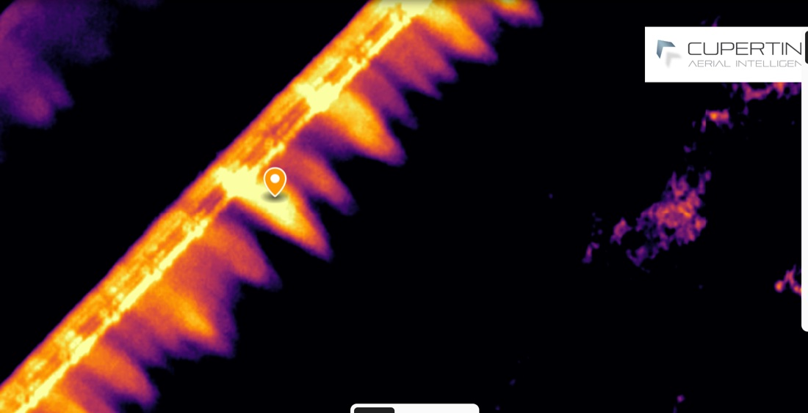
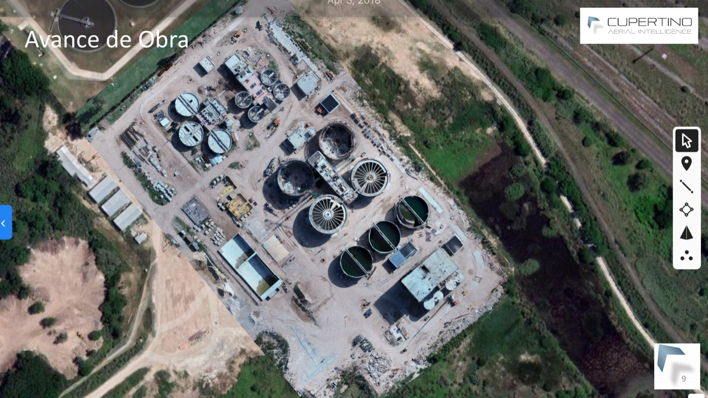

drone tech · venture · 2021–2023
Drone venture
A drone-services venture I co-founded — aerial inspection and intelligence for oil & gas, energy, utilities, and agro. Images and video from the air, turned into information for integrity, monitoring, security, and emergency response.
Selected cases

Grain export supply chain
drone tech × supply chain
Silo bags to bulk carriers — the whole chain, from the air.

Refinery — infrastructure survey
oil & gas
Orthomosaic, 3D, measurements, flagged issues, risk-tiered site map.

Construction & infrastructure
surveying · earthworks
Progress monitoring, cut-and-fill, 3D models, linear works.
The full overview deck (Spanish), as it was: